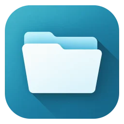

Файловый менеджер для Android
Открыли —
и вы уже в папке.
Ничего не теряется.
Приложение запускается прямо в вашей папке: без индексации, заставок и ожидания. Копирует, перемещает и упаковывает так, что недописанный файл никогда не выдаётся за готовый. Без интернета, рекламы и аккаунтов.
Папки
Все носители
и понятные пути
Встроенная память, SD-карта и USB-флешка — со свободным местом, без обхода диска. Папки называются по-человечески, а у каждого файла — бейдж типа по расширению.
Сразу ваша папка. Домашнюю можно назначить в настройках. Сортировка по имени, типу, дате или размеру, группировка, папки сверху, скрытые файлы — по выключателю. Имена сортируются по-человечески: file2 перед file10.
Все носители в одном списке. Встроенная память, карта памяти и USB, сколько места свободно и сколько всего. Отключили флешку посреди копирования — операция остановится с честным итогом.
Новая папка или пустой файл с любым расширением. В папке только для чтения кнопка остаётся на месте и объясняет, почему здесь ничего не создать.
Имя проверяется до записи. Если оно занято, приложение попросит другое — перезаписи не бывает. При переименовании выделено имя без расширения: можно сразу печатать.
Копирование и перемещение
Готовый файл появляется,
только когда он готов
Копия пишется во временный .part рядом с местом назначения, сверяется с источником и только потом получает своё имя. Оборвалось — удаляется только этот .part.
- Запись во временный файл
- Сброс на диск
- Сверка размера с источником
- Переименование в итоговое имя
Долгое нажатие — и выбирайте. Файлы и папки вместе, «Выбрать все» берёт только видимое. Внизу — копировать, переместить, удалить, поделиться, а в «Ещё» — ZIP, переименование и свойства.
Сначала место, потом действие. Ходите по папкам и носителям, плашка сверху помнит, что вы несёте. Пока не нажато «Вставить сюда», ничего не происходит.
Перемещение на том же носителе — мгновенное переименование. Между носителями — копия, и исходник удаляется только после проверки.
Путь, тип, дата и точный размер в байтах. Размер папки считается только по кнопке — и учитывает скрытое.
Совпадения имён
Ничего не перезаписывается молча
Если в папке назначения уже есть что-то с тем же именем, решаете вы. Для файлов — пропустить, сохранить оба или заменить. Для папок — ещё и объединить. Попробуйте:
Копируем папку Документы туда, где уже есть своя Документы.
Копируем
- Документы/
- a.txt
- отчёт.pdf
Уже в папке
- Документы/
- b.txt
- отчёт.pdf
Получится
Удаление — окончательное
И поэтому всегда с подтверждением, которое называет файл, папку со всем содержимым или число объектов.
Долгая операция — в фоне
Сверните приложение, заблокируйте экран — копирование идёт дальше, прогресс в уведомлении, там же «Отменить».
Честный итог
Что сделано, что пропущено и почему, где ошибка. Если Android закрыл приложение посреди работы, при следующем запуске вы увидите, на чём операция остановилась.
Поиск, картинки, ZIP, текст
Открывается здесь же,
без лишних приложений
Картинки, архивы и текстовые файлы открываются внутри. Остальное — в приложении, которое вы выберете.
По именам или по тексту внутри файлов. В текущей папке и подпапках, без фонового индекса: результаты появляются по мере нахождения. «Открыть расположение» переносит в папку файла.
Листайте соседние картинки в порядке списка. Масштаб до 5× двумя пальцами, двойной тап — 2×. JPEG, PNG, WebP, GIF, HEIC — всё, что умеет телефон.
Загляните в архив, не распаковывая. Папки внутри открываются, «Распаковать» кладёт всё в новую папку рядом. Упаковать выделенное в ZIP — из меню «Ещё», а «Заархивировать и отправить» сразу передаёт архив.
Опасные пути внутри архива отсекаются до записи: ничего не выпрыгнет за пределы папки.
Поправить конфиг или заметку — текстовые файлы до 1 МиБ в UTF-8. Переводы строк и BOM сохраняются как были. Если файл изменили снаружи, пока вы правили, приложение спросит, чью версию оставить.
Ваши файлы
Каждое разрешение — по делу
Файловому менеджеру нужен доступ ко всем файлам — иначе он не файловый менеджер. А вот выхода в интернет у приложения нет вовсе: файлы не покидают телефон, пока вы сами их не отправите.
Просит
MANAGE_EXTERNAL_STORAGEДоступ к файлам — показывать, копировать, искатьFOREGROUND_SERVICE_DATA_SYNCДолгая операция продолжается в фонеPOST_NOTIFICATIONSПрогресс и итог в шторке. Можно отказать — всё будет работатьWAKE_LOCKКопирование не засыпает при погашенном экране
Не просит
INTERNETНи одного запроса в сетьАналитикаНикто не считает, что и где вы открываетеРеклама и аккаунтНи баннеров, ни регистрации
Оформление
Тёплая или холодная. Светлая, тёмная или чёрная
Две палитры и три фона. Чёрный фон для OLED-экранов, а панели и меню остаются тёмно-серыми, чтобы не потерять границы. Нажмите на вариант — и страница переоденется вместе с ним.

Иконка на рабочем столе тоже меняется вслед за палитрой.Все экраны
Посмотрите сами
Настоящие скриншоты приложения. Листайте стрелками или свайпом, нажмите на экран, чтобы увеличить.
Наведите порядок в телефоне
Бесплатно. Без рекламы, аккаунтов и интернета. Встроенная память, SD-карты и USB.
Android 11 и новее
Откройте скачанный APK и разрешите установку приложений из браузера, если Android попросит.